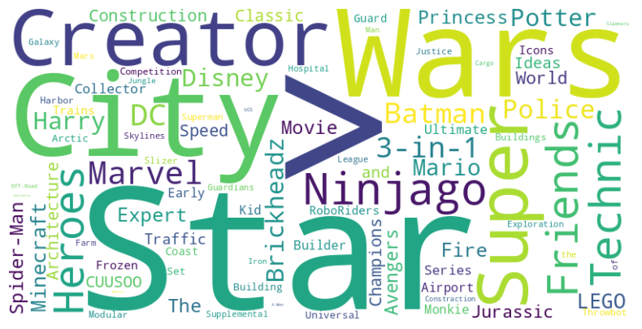
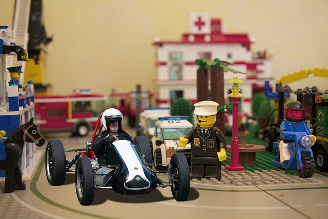
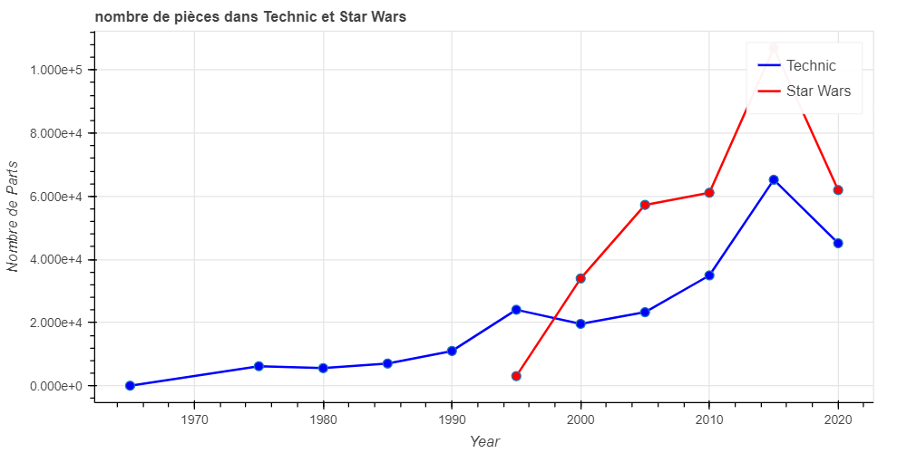
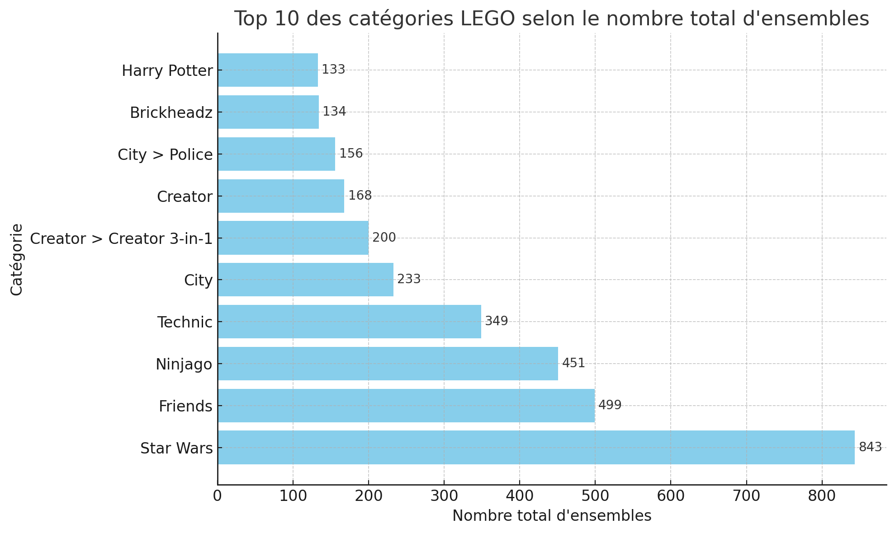
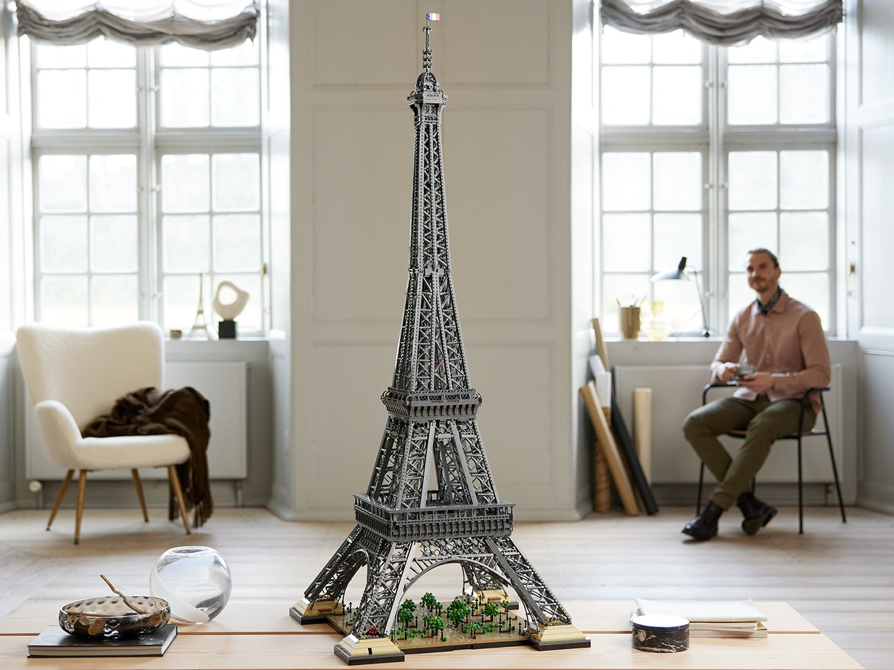
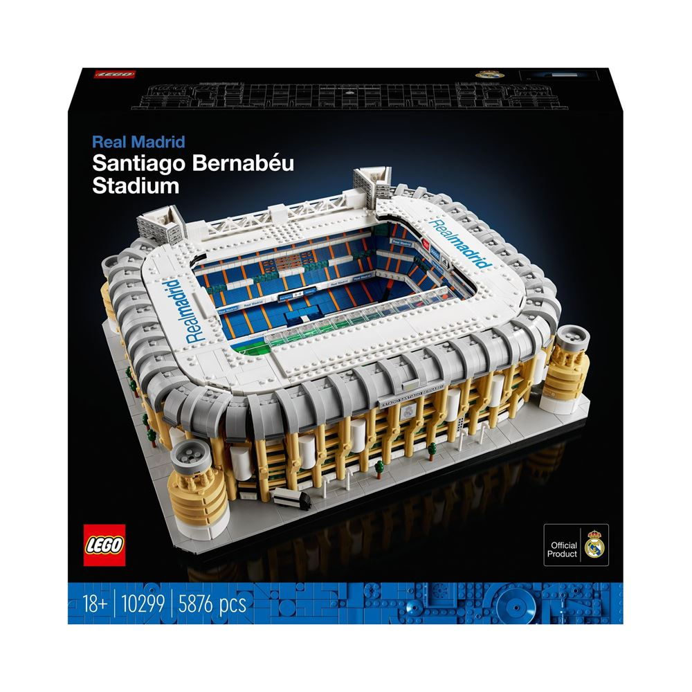

Impact Culturel des LEGO
Depuis la création de la première brique LEGO en 1949, le monde de LEGO s'est transformé en un univers en constante expansion, unifié par la simplicité d'un concept et la richesse d'une imagination sans limites. Ce n'est pas simplement une histoire de jouets, mais une saga d'innovation, d'éducation et de créativité qui a transcendé les générations et les frontières culturelles. Les ensembles LEGO ne sont pas de simples assemblages de briques colorées ils sont des expressions de l'ingéniosité humaine, des répliques miniatures de notre monde et parfois même des fenêtres vers des galaxies lointaines. De la série Technic, qui a introduit les principes de l'ingénierie aux enfants, à la collaboration emblématique avec "Star Wars", qui a fusionné la narration cinématographique avec le jeu, l'évolution des sets et ensembles LEGO reflète une quête incessante d'excellence et d'exploration.
WordCloud des plus grands Ensembles de Lego Mais comment cette petite entreprise danoise est-elle passée de la fabrication de jouets en bois à la construction d'un empire qui a façonné la manière dont nous jouons, apprenons et rêvons ? Comment les ensembles LEGO ont-ils évolué pour refléter les changements dans la technologie, la culture et l'éducation ? Et surtout, comment LEGO a-t-il réussi à rester pertinent et inspirant dans un monde en perpétuelle mutation ? Ici nous explorerons l'importance qu'a eu la culture sur les LEGO à travers Les années
Les débuts (Années 1970 a 1990)
durant le 20ème siècle , l'intéret principal envers les LEGO étaeint la construction de véhicules , comme nous pouvons le voir , les Sets Technic sont les plus fabriqués La série LEGO Technic, introduite en 1977, représente un tournant dans l'histoire de LEGO et dans le monde du jeu en général. À une époque où l'industrie du jouet était dominée par des produits simples et souvent statiques, LEGO Technic a introduit une complexité et une sophistication inédites qui ont révolutionné la manière dont les enfants (et les adultes) jouent et apprennent.

Contrairement aux briques LEGO traditionnelles, les ensembles Technic comprennent des pièces comme des engrenages, poulies, des leviers et des moteurs. Ces éléments permettent de construire des modèles fonctionnels avec des mécanismes réalistes, offrant une introduction pratique à l'ingénierie et à la mécanique.
LEGO Technic a élargi l'attrait de LEGO au-delà de l'enfance. Avec des ensembles allant du niveau débutant au niveau expert, Technic attire un public diversifié, y compris les adultes (section création et creation expert) et les passionnés de LEGO.
durant le 20ème siècle , l'intéret principal envers les LEGO étaient la construction de véhicules , comme nous pouvons le voir , les Sets Technic sont les plus fabriqués jusqu'a progressivement rattraper par ceux de Star Wars de par sa communauté grandissante
La pop culture a l'honneur : l'exemple Star wars
La série "Star Wars" est plus qu'une simple franchise de films, c'est un phénomène culturel qui a captivé des générations de fans à travers le monde. La collaboration entre LEGO et "Star Wars" est une manifestation tangible de l'influence de la pop culture dans le monde du jeu et de la créativité. les sets LEGO Star Wars connaissent une progression exponentielle passée les années 2000 cela peut s'expliquer par plusieurs facteurs , une communauté extremement dédiée et aussi les films de la prélogie qui sortent dans la même période
Durant la sortie de la menance fantôme en 2001 , une replique Darth maul de 1868 pièces (10018-1) etait la boite avec le plus de pièces de l'année
Plus qu'un Ensemble , un Empire !
L'univers Star Wars eclipse totalement celui de technic ce n'est pas forcément un manque d'intéret car technic croit quand même mais plus a cause d'une dynamique changeante avec la popularité d'autres sets de LEGO comme Star Wars ou encore ...
Ninjago , DC/Marvel, Harry Potter, Technic ces univers ont leur propre biome ils ont des sous thémes du a un important nombre de sets , un nombre aussi élevé montre l'interêt général du public
La série LEGO "Star Wars" a créé une culture de collection parmi les fans. Les éditions limitées et les modèles rares sont recherchés par les collectionneurs, créant une communauté soudée de passionnés qui partagent une appréciation commune pour "Star Wars" et LEGO. La combinaison de LEGO et de "Star Wars" attire un large éventail de fans, des enfants qui découvrent la saga pour la première fois aux adultes qui ont grandi avec elle. Cela crée un lien intergénérationnel, unissant les fans à travers l'âge et le temps. En résumé, la collaboration entre LEGO et "Star Wars" est un exemple brillant de la manière dont la pop culture peut être transformée en une expérience tangible, éducative et communautaire.
Une Approche culturelle
les LEGO c'est aussi la connexion géographique , en effet via les sets architecture beaucoup de monuments , batiments , stades y sont représentés .
la tour Eiffel est le plus gros set LEGO de la catégorie avec ... 100001 PIECES

le Taj Mahal (5923 pièces)
le Stade du Réal Madrid , Santiago Bernabeu (5876 pièces)
Voyager , apprendre et décrouvrir en construisant !
En construisant ces modèles, les enfants et les adultes peuvent explorer l'histoire et l'importance culturelle de ces structures, tout en appréciant leur beauté et leur ingénierie. Les ensembles LEGO Architecture rendent l'art de l'architecture accessible à tous, quel que soit l'âge ou le niveau d'expertise. Cela démocratise l'accès à l'architecture, permettant à chacun d'explorer et d'apprécier ce domaine artistique et technique.